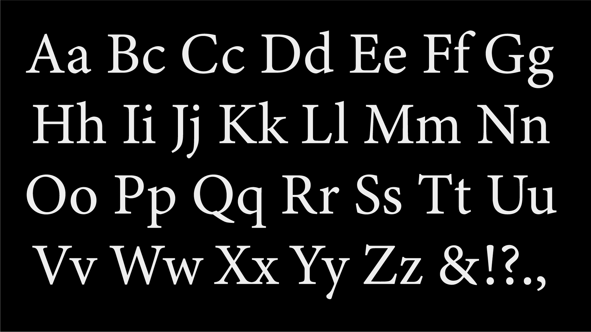
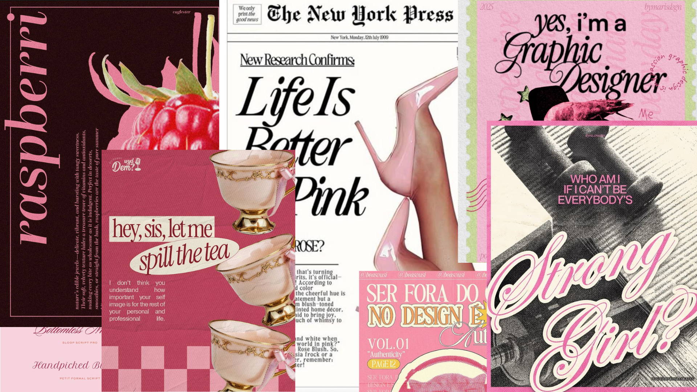
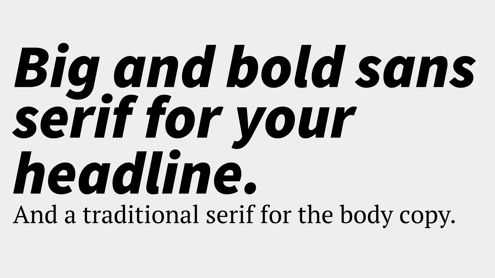
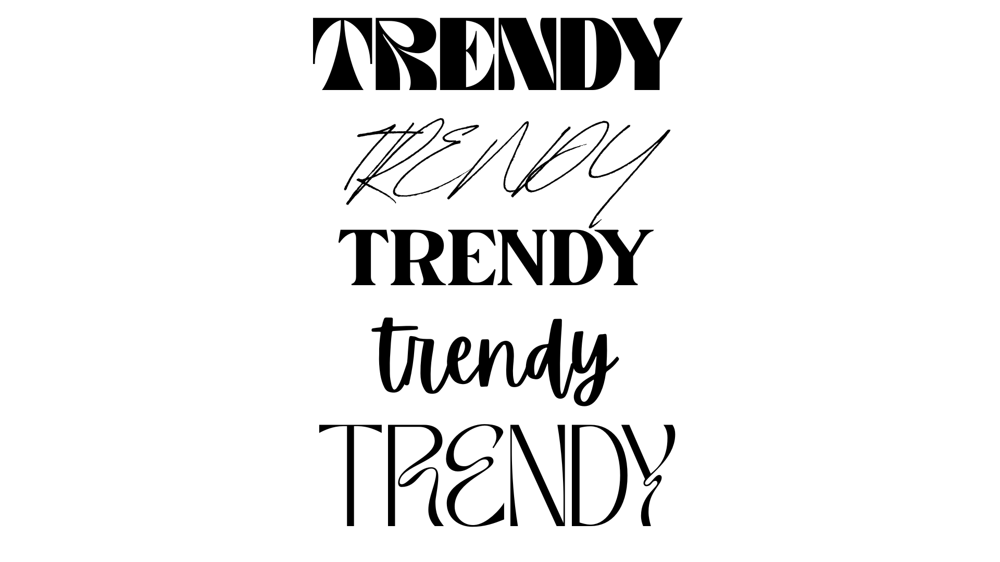

Typography is vital for communication in design. Understanding the fundamentals of type and how to choose the best typeface pairings can improve your designs dramatically. After reading this guide, choosing fonts will be a breeze.

Is It A Font Or A Typeface?
Let’s talk about the elephant in the room first. Font vs typeface, what’s the difference? Which is correct? The terms typeface and font are sometimes used interchangeably, which can be a little confusing.
A typeface is a collection of fonts while a font refers to a specific style or weight within a typeface family. So let’s put this in context with an example. Helvetica is a typeface. But
Helvetica Bold
is a specific font within the Helvetica typeface family. Here’s a visual example so you can see the difference between a typeface and fonts.
What Is Typography?
Typography is the art and technique of arranging type. Whether you’re designing a website, an app, or a poster, you’re using type to deliver a message.
Typography serves two main purposes. The first is it must be legible. Can a user read and understand it? The second is how you use typography to create a mood or design aesthetic to attract a specific audience.
Learning the fundamental rules of type, so you can break them later, will help you become a better designer. It just takes practice and a little knowledge. If you want to learn more about type and how it relates to design, check out this article
What is typography?
A serif is a small line or stroke attached to the end of a larger stroke, often referred to as the “feet” shown at the bottom of letters. Not all serifs are equal. Some have slight variations depending on the typeface and that is part of what makes them unique. An advantage of using serif typefaces is how many font weights they usually have within a family. One serif family might have a regular, italics, semi bold, semi bold italic, bold, bold italic, small caps, and more.
Serif typefaces are more formal and traditional. They’re often used editorially such as in newspapers, magazines, and the body copy of books. One of the most well-known serif typefaces and probably the first font you ever used on a computer is Times New Roman.
Sans Serif Typefaces
Sans serif typefaces do not have serifs (the French word sans, means “without”). These typefaces are more modern, bold, and great for eye-catching headlines. One of the most popular sans serif typefaces is Arial which is a copycat of Helvetica. Our main brand fonts here at Flux are two san serif typefaces.
Decorative Typefaces
This category of typeface should be used sparingly, most for titles and headlines. It can range from scripts to monotype, and anything in between. These are a great way to add character to your design but should be avoided for long paragraphs of body copy as they can be difficult to read.
Tips for Choosing Fonts
We’ve discussed what typography is as well as some of the main categories of type, now let’s dive into tips for how to choose the best fonts.
Start With Inspiration
An important part of the design process is research and inspiration. One of my favorite places to find design inspiration is on Pinterest. Let’s say I’m working on designing a poster to advertise an event. On Pinterest, I searched for “bold poster design” and this is what I found. There’s a lot of fun typefaces that might inspire the next one you use for your design.

Notice from this moodboard how type really influences the mood of the design. For more tips on why typography is important in design,
check out this article to learn more.
No matter what you are designing, you should have a main font. When it comes to web design, most likely this will be used in your title or headline text. It’s meant to be an accent, to stand out, and influence the mood of your design. It doesn’t really matter what type of font it is, but knowing the first one will help you choose your second.
Check out this video where Ran gives 3 tips to improve your typography.
Create Contrast With Your Second Font
Now that you have a main font for your design, the best way to choose a good secondary font is to make sure it’s dramatically different yet complements the design. You wouldn’t want to choose two serifs that look similar — there’s no contrast, and it looks like a design mistake. Take a look at this example: these are two different serif typefaces, but it’s difficult to tell.
Try Pairing Opposites
One way to choose fonts is to pair opposites. For example, you can use a big and bold sans serif for your headline and a traditional serif for the body copy. This contrast creates visual balance and helps guide the reader’s eye. Take a look at this example to see this tip in action.

Vary Width
Another tip is to think about the width of the typefaces and how they complement each other. For instance, you might pair a condensed sans serif typeface with a wider sans serif. While they’re in the same category, their contrasting widths create visual interest. Take a look at this example for inspiration.
Consider Shape: Geometric vs. Organic
Typefaces can have geometric or organic attributes in their shape. One of the most well-known geometric typefaces is Futura, notice how open and round the O is in this poster design example.
In this example, the main headline uses a modern geometric sans serif typeface. This font choice helps establish the rest of the design — it pairs well with the Lomography logotype, the camera product photo, and other design elements.
Limit Your Design To 2–3 Typefaces
Just like choosing a color palette, it can be easy to get carried away with all the options available to use for your design. A good general rule is to stick to about 2–3 different typefaces total for a design. Now of course this might vary depending on what you are designing, but it’s a good rule of thumb.
For example, if you’re designing a logo, you’ll most likely modify one main font and maybe use a secondary typeface. For a website or an app, you’ll likely want to follow the same rule. Especially when designing for digital screens, legibility and accessibility are key to creating a good user experience.
Take a look at this poster designed for the Tribeca Film Festival. It’s a successful design for many reasons—such as using scale with type, a good use of space, and hierarchy. But notice how they limited the design to three typefaces. The “CUT” and “TO” are two distinctly different bold serif typefaces. The first is thick and condensed while the second is still bold but wide. These are paired well with a third monotype (think typewriter) font for the main body copy with the fine details of the event.
Avoid Trendy Or Popular Typefaces
You want to choose typefaces that stand the test of time. Be wary of trendy or popular typefaces that you see everyone else using. If you choose something too niche or tied to current trends—like a logo font that feels “of the moment”—you’ll likely have to redesign it after just a few years. To keep your design timeless, include classic and well-known typefaces. Check out this fun article on
25 classic fonts that will last a whole design career.

Understand The Goal For This Design
If you’re designing a brand or a website for a client, ask yourself: are they in an industry where trust is crucial, like banking? Or are they trying to stand out and disrupt their space, like a cryptocurrency app? The answer should shape your font decisions.
Understanding the intention behind the design will guide your font choices. This is something Ran expands on in his video about how to choose fonts.
Want To Learn More About Type And Design?
Consider checking out one of our programs for a deep dive into a specific topic. We offer 3 different programs that go deep into design, development, and how to build a successful freelance business. We give you the path to follow so you learn only the skills you need at your pace.
In The $10k Website Process, you’ll discover a step-by-step process to design beautiful, high-value websites that achieve strategic goals for your clients. Master the art and strategy of website design, and increase the value of your services, as well as your rates.
In The Webflow Masterclass, you’ll learn how to use Webflow to build custom, fully-functional websites quickly without learning how to code. Break free from restrictive templates, regain your creative freedom, and bring your best creations to life with this powerful visual development tool.
In The 6 Figure Freelance Designer, you’ll learn how building a successful business as a freelancer is possible anywhere with an internet connection. We give you a roadmap to follow to consistently attract high-value clients and make a great living doing what you love.
Check out our YouTube channel Flux where we share tons of free information on how to become a web designer.
Website arcticle by Monica Galvan. Illustrations and mood board by Ashly Rico. Photography by Charles Taylor. Poster by Tribeca Film Festival. Poster by The Limits of COntrol.